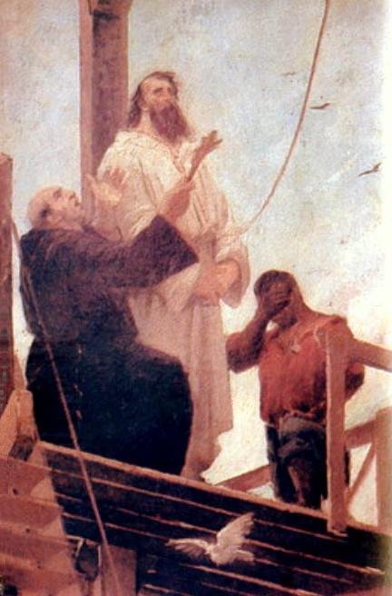

Porque fui enforcado
Além das influências externas, fatores mundiais e religiosos contribuíram também para a articulação da conspiração na Capitania de Minas Gerais. Com a constante queda na receita institucional, devido ao declínio da atividade mineradora, a Coroa resolveu, em 1789, a aplicar o mecanismo da Derrama, para garantir que as receitas oriundas do Quinto, imposto português que reservava um quinto de todo minério extraído no Reino de Portugal e seus domínios.
A partir da nomeação de Luís da Cunha Meneses como governador da capitania, em 1783, ocorreu a marginalização de parte da elite local em detrimento de seu grupo de amigos. O sentimento de revolta atingiu o máximo com a decretação da derrama, uma medida administrativa que permitia a cobrança forçada de impostos, mesmo que preciso fosse prender o cobrado, a ser executada pelo novo governador da Capitania, Luís Antônio Furtado de Mendonça, 6.º Visconde de Barbacena (futuro Conde de Barbacena), o que afetou especialmente as elites mineiras. Isso se fez necessário para se saldar a dívida mineira acumulada, desde 1762, do quinto, que à altura somava 768 arrobas de ouro em impostos atrasados.
Ameaçados de uma derrama violenta, nós - eu, o tenente-coronel Francisco de Paula Freire de Andrade, os poetas Cláudio Manuel da Costa, Tomás Antônio Gonzaga e Alvarenga Peixoto - inconfidentes, marcamos um levante para a ocasião da derrama de 1789. Porém, antes que a conspiração se transformasse em revolução, em 15 de março de 1789 foi delatada aos portugueses por Joaquim Silvério dos Reis, coronel, Basílio de Brito Malheiro do Lago, tenente-coronel, e Inácio Correia de Pamplona, luso-açoriano, em troca do perdão de suas dívidas com a Real Fazenda.
Entrementes, em 14 de março, o Visconde de Barbacena já havia suspendido a derrama, o que esvaziara por completo o movimento. Ao tomar conhecimento da conspiração, Barbacena enviou Silvério dos Reis ao Rio para apresentar-se ao vice-rei, que imediatamente abriu uma investigação, no dia 7 de maio.
Fui avisado, mas estava em viagem licenciada ao Rio de Janeiro, então me escondi no sótão da casa de Domingo Fernandes da Cruz, amigo da tia de Alvarenga Peixoto, dona Inácia. Como desejava saber "em que termos vão as coisas", pedi ao padre Inácio de Lima, sobrinho de dona Inácia, para que procurasse por Silvério dos Reis: "amigo". No dia 9 de maio, Silvério dos Reis contou ao vice-rei que sabia quem conhecia o meu paradeiro. No dia seguinte, o Padre Inácio foi apresentado ao Palácio e ameaçado para entregar minha localidade.
Presos, todos aguardamos durante três anos pela finalização do processo. Alguns foram condenados à morte e outros ao degredo; algumas horas depois, por carta de clemência de D. Maria I, todas as sentenças foram alteradas para degredo, sendo eu a única exceção, que continuei enforcado. Fomos sentenciados pelo crime de "lesa-majestade", definida, pelas Ordenações Afonsinas e as Ordenações Filipinas, como traição contra o rei. Fui o único conspirador punido com a morte por ser o inconfidente de posição social mais baixa, haja vista que todos os outros ou eram mais ricos, ou detinham patente militar superior.
E assim, numa manhã de sábado, 21 de abril de 1792, percorri em procissão as ruas do centro da cidade do Rio de Janeiro, no trajeto entre a cadeia pública e onde fora armado o patíbulo. O governo geral tratou de transformar aquela numa demonstração de força da coroa portuguesa, fazendo verdadeira encenação. A leitura da sentença estendeu-se por dezoito horas, após a qual houve discursos de aclamação à rainha, e o cortejo munido de verdadeira fanfarra e composta por toda a tropa local. Essa foi uma das possíveis causas para a preservação de minha memória, já que todo esse espetáculo acabou por despertar a ira da população que presenciou o evento, quando a intenção era, ao contrário, intimidar a população para que não houvesse novas revoltas.
Executado e esquartejado, com meu sangue se lavrou a certidão de que estava cumprida a sentença, tendo sido declarados infames a minha memória e meus descendentes. Minha cabeça foi erguida em um poste em Vila Rica, tendo sido rapidamente cooptada e nunca mais localizada; os demais restos mortais foram distribuídos ao longo do Caminho Novo: Santana de Cebolas (atual Inconfidência, distrito de Paraíba do Sul), Varginha do Lourenço, Barbacena e Queluz (antiga Carijós, atual Conselheiro Lafaiete), lugares onde fiz meus discursos revolucionários. Arrasaram a casa em que morava, jogando sal ao terreno para que nada lá germinasse.
Fonte (adaptada)